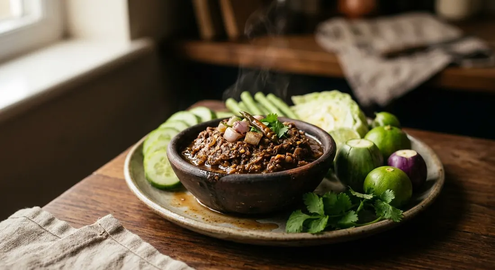

Chillies, shallots and garlic charred over the fire and pounded with simmered pla ra — the Isaan relish where the fermented fish jar is the seasoning, and a plate of blanched vegetables the whole meal.

น้ำพริกปลาร้า is Wongnai's "น้ำพริกพื้นฐานของภาคอีสาน" — the basic relish of Isaan. Its engine is not a paste or a stock but the ปลาร้า (pla ra) jar: river fish fermented with salt and toasted rice for months until the liquid turns into a deep, savoury, faintly sour seasoning that needs no fish sauce and no shrimp paste behind it. Every Thai source makes the same point — the pla ra is the salt.
The aromatics go through fire first. Chillies, shallots and garlic are roasted in a dry pan or over coals until the skins blister, and only then pounded — the Cheewajit (Amarin Cuisine) recipe adds charred galangal and lemongrass to the pound, while Wongnai's goes the tomato route. The pound is deliberately coarse: TrueID's version says to stop while you can still see pieces of chilli and shallot, so every mouthful has texture.
The name travels. Isaan cooks may call the same family of pla ra relishes แจ่วปลาร้า (jaew pla ra), ปลาร้าบอง, ปลาแดกบอง or แจ่วบอง — Aroifin explains that central Thais say ปลาร้าสับ for what Isaan calls ปลาร้าบอง, and cites esan108's Isaan dictionary: "ปลาแดกบอง — pla ra dressed up (pla ra ทรงเครื่อง)". Our page is the pounded-fresh version; the bong sibling, fried dry with galangal and kaffir lime, is its long-keeping cousin.
| Thai | English | Amount |
|---|---|---|
| พริกขี้หนูแห้ง (คั่ว) | Dried bird's eye chillies, dry-roasted | 15 |
| กระเทียม (เผา) | Garlic, charred | 1 head |
| หอมแดง (เผา) | Shallots, charred | 10 |
| ข่าแก่ (เผา) | Galangal, charred and sliced fine | 1 tsp |
| ตะไคร้ (เผา) | Lemongrass, charred and sliced fine | 2 tsp |
| น้ำปลาร้า (ต้มสุก) | Pla ra (fermented fish), simmered | 1 cup |
| เกลือป่น | Salt | 1 tsp |
| มะเขือส้ม / มะเขือเทศ (เผา) | Turkey berries or a ripe tomato, charred (optional) | 5–7 / 1 |
| ต้นหอม, ผักชี | Spring onion and coriander, sliced | to garnish |
| น้ำมะนาว | Lime juice (optional) | to taste |
The Wongnai version: 3 prik noom, 2 prik chee fah, 7–10 large bird's eye chillies, 5 shallots and 20 garlic cloves — all charred and peeled — pounded with 7 turkey berries and just 3–4 tbsp of pla ra, finished with sliced spring onion and coriander. The TrueID "lazy" jaew pla ra: a handful of chillies, 5–6 garlic cloves, 5–6 shallots and 1–2 ripe tomatoes dry-roasted together, coarse-pounded, loosened with 3–4 tbsp boiled pla ra and a squeeze of lime. The fish-flesh pot (nlovecooking): blanched pla ra flesh and blanched snakehead fish pounded into the relish with palm sugar and lime — no shrimp paste, because the pla ra is salty enough already.
The chillies. Cheewajit's version is built on dried bird's eye chillies, dry-roasted; Wongnai and TrueID char fresh chillies (prik noom, prik chee fah, jinda) over the fire; nlovecooking just fries fresh ones in the pan. Dried chillies give a deeper, toastier heat; fresh charred ones are sweeter and greener.
Fish flesh or not. Cheewajit and Wongnai season with pla ra liquid alone. nlovecooking pounds in blanched pla ra flesh and snakehead fish, and Bangkok Post's Isaan column describes the traditional version with grilled catfish pounded in. The flesh makes it a fishier, chunkier relish; the liquid-only version is looser and quicker.
The herbs and vegetables. Galangal and lemongrass (Cheewajit), turkey berries (Wongnai), ripe tomato (TrueID), spring onion and coriander (Wongnai), or nothing at all (nlovecooking). The galangal-lemongrass route belongs to the bong family; the tomato route is the everyday Isaan jaew habit.
The sour. nlovecooking, TrueID and Bangkok Post squeeze in lime juice. Cheewajit and Wongnai add no acid at all — the pla ra's own ferment supplies the sour, and lime is listed only as an optional extra. If your pla ra is mild, the lime helps; if it is properly fermented, it does not need the help.
The sweet. nlovecooking adds palm sugar to the pound; Cheewajit mentions sugar only as an optional correction; Wongnai and TrueID use none. Everyone agrees on the reason for the caution: pla ra brings its own depth, and over-seasoning buries it.
The name. The same relish answers to น้ำพริกปลาร้า, แจ่วปลาร้า and — when it is the dried, long-keeping version — ปลาร้าบอง, ปลาแดกบอง or แจ่วบอง (Aroifin, quoting esan108). Central Thailand says ปลาร้าสับ; Isaan says ปลาร้าบอง.
This recipe is translated from the following Thai-language sources. Where they disagree, we've said so.
1. Cheewajit (Amarin Cuisine, from the book 60 เมนูจานเผ็ด) — "น้ำพริกปลาร้า พริกแห้งรสแซ่บ" (the dried-chilli, galangal and lemongrass version used here) — cheewajit.com
2. Wongnai — "เปิดตำราแจก 13 สูตรน้ำพริก 4 ภาคทำกินง่าย! ทำขายรวย!" (the charred fresh-chilli and turkey-berry version; the simmer-the-pla-ra tip) — wongnai.com
3. TrueID Food — "แจกสูตรน้ำพริกปลาร้า ฉบับคนขี้เกียจ" (the jaew pla ra with tomato; the air-fryer tip; taste-before-seasoning rule) — food.trueid.net
4. Nlovecooking — "น้ำพริกปลาร้า อาหารอร่อยๆ พร้อม 7 เคล็ดลับความอร่อย" (the fish-flesh pot with snakehead; the no-kapi rule) — nlovecooking.com
5. Aroifin — "วิธีทำ ปลาร้าสับ ปลาร้าบอง ให้แซ่บนัว" (the bong family: names, galangal-lemongrass-kaffir-lime method, tamarind) — aroifin.com
6. Bangkok Post — "An acquired taste" (Khun Saming's Isaan column: the traditional version with grilled catfish, lime juice, boiled morning glory and fresh white turmeric) — bangkokpost.com